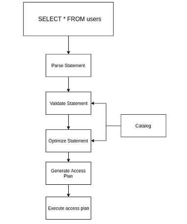
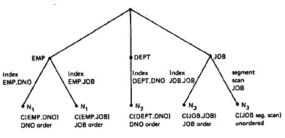
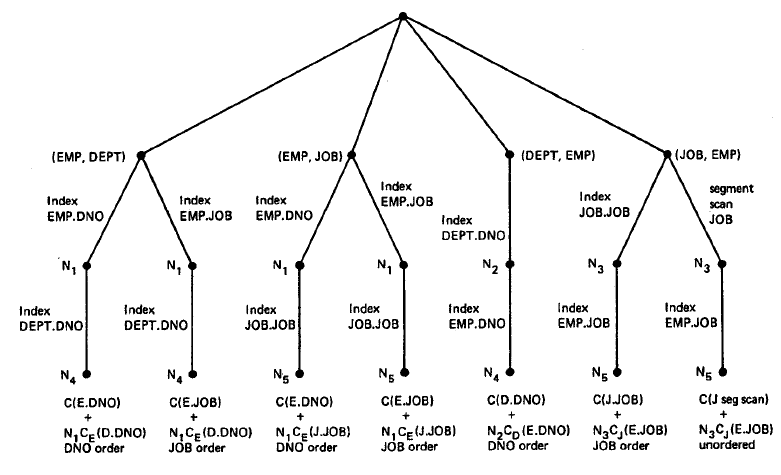
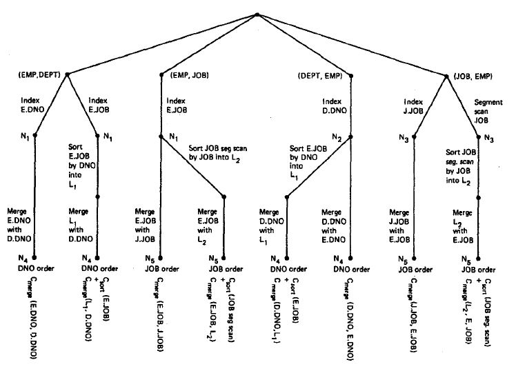
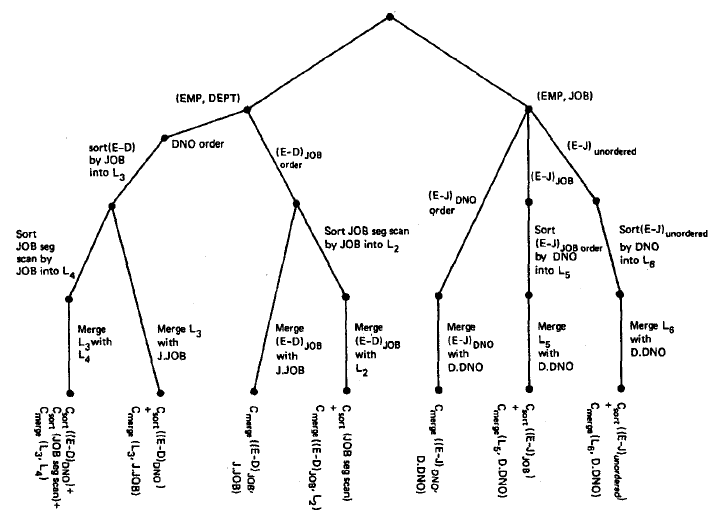

Agenda
Agenda
Agenda
Agenda
- Background
- The paper
- Expanding scope
Background
Background
Readings in Database Systems
Readings in Database Systems
- Peter Bailis
- Joseph M. Hellerstein
- Michael Stonebraker
IBM IMS
IBM IMS
IBM IMS
IBM IMS
- Hierarchical data model
- Programmer-defined physical storage format
- Tuple-at-a-time queries
IBM IMS
IBM IMS
- Hierarchical data model
- Programmer-defined physical storage format
- Tuple-at-a-time queries
IBM IMS
IBM IMS
def select_appliance():
join_records = []
for part_tuple in part_segment:
for provider_tuple in provider_segment:
if part_tuple.provider_id == provider_tuple.id:
join_records += (part_tuple, provider_tuple)
return join_records
IBM System R
IBM System R
System R, an experimental database system, was constructed to demonstrate that the usability advantages of the relational data model can be realized in a system with the complete function and high performance required for everyday production use. This paper describes the three principal phases of the System R project and discusses some of the lessons learned from System R about the design of relational systems and database systems in general.
- A History and Evaluation of System R
Terminology
Terminology
Access Path
An access path is a way of retrieving tuples from a table and consists of either a file scal or an index plus a matching selection condition.
- Database Management Systems
The Paper
The Paper
Abstract
Abstract
In a high level query and data manipulation language such as SQL, requests are stated non-procedurally, without reference to access paths. This paper describes how System R chooses access paths for both simple (single relation) and complex queries (such as joins), given a user specification of desired data as a boolean expression of predicates. System R is an experimental database management system developed to carry out research on the relational model of data. System R was designed and built by members of the IBM San Jose Research Laboratory.
Abstract
Abstract
SELECT * FROM tenk1 t1, tenk2 t2 WHERE t1.unique1 < 100 AND t1.unique2 = t2.unique2 ORDER BY t1.fivethous;
Abstract
Abstract
EXPLAIN SELECT t2.name FROM t1 JOIN t2 ON (t1.id = t2.id) WHERE t1.id = 125;
QUERY PLAN
-----------------------------------------------------------------
Nested Loop (cost=0.00..178.31 rows=320 width=28)
-> Seq Scan on t1 (cost=0.00..152.15 rows=60 width=3)
Filter: (id = 125::oid)
-> Materialize (cost=0.00..37.02 rows=3 width=34)
-> Seq Scan on t2 (cost=0.00..35.08 rows=3 width=34)
Filter: (id = 125::oid)
Processing of an SQL statement
Processing of an SQL statement

Processing of an SQL statement
Processing of an SQL statement

The Research Storage System (RSS)
The Research Storage System (RSS)
- Mantains the physical storage of relations
- Access path to relations
- Locking
- Logging and recovery
The Research Storage System (RSS)
The Research Storage System (RSS)
- Mantains the physical storage of relations
- Access path to relations
- Locking
- Logging and recovery
The Research Storage System (RSS)
The Research Storage System (RSS)
- Relations are stored as collection of tuples in 4Kb pages
- Pages are organized in segments (logical units)
The Research Storage System (RSS)
The Research Storage System (RSS)
- Access paths:
- Via RSS scan (kind of a for loop)
- All pages from non empty segments are touched
- Via Index scan (B-Trees with (key, id of tuples) in the leaves)
- All index pages are touched + relation pages
- Via RSS scan (kind of a for loop)
Costs for single relation access paths
Costs for single relation access paths
For single relations, the cheapest access path is obtained by evaluating the cost for each available access path (each index on the relation, plus a segment scan). […] For each such access path, a predicted cost is computed along with the ordering of the tuples it will produce. […] and the cheapest access path is the one chosen.
Costs for single relation access paths
Costs for single relation access paths
\[COST = PAGE\_FETCHES + W (RSI\_CALLS)\]
Costs for single relation access paths
Costs for single relation access paths
Statistics collected by System R for each relation T:
- NCARD(T)
- TCARD(T)
- P(T)
Statistics collected for each index I on relation T:
- ICARD(I)
- NINDX(I)
Costs for single relation access paths
Costs for single relation access paths
SELECT * FROM tenk1 t1 WHERE t1.unique1 < 100;
Costs for single relation access paths
Costs for single relation access paths
| Operation | Selectivity Factor |
|---|---|
colum = value |
F = 1 / ICARD(column_index) or 1/10 |
column1 = column2 |
F = 1/MAX(ICARD(column1 index), ICARD(column2 index)) or F = 1/ICARD(column-i index) or F = 1/10 |
column > value |
F = (high key value - value) / (high key value - low key value) or 1/3 |
column BETWEEN value1 AND value2 |
F = (value2 - value1) / (high key value - low key value) or 1/4 |
column IN (list of values) |
F = (number of items in list) * (selectivity factor for column = value) |
Costs for single relation access paths
Costs for single relation access paths
| Operation | Selectivity Factor |
|---|---|
columnA IN subquery |
F = (expected cardinality of the subquery result) / (product of the cardinalities of all the relations in the subquery’s FROM-list). |
(pred1) OR (pred2) |
F = F(pred1) + F(pred2) - F(pred1) * F(pred2) |
(pred1) AND (pred2) |
F = F(pred1) * F(pred2) |
NOT pred |
F = 1 - F(pred) |
Costs for single relation access paths
Costs for single relation access paths
\[QCARD = \sum_{i=0}^{i=bool\_factor}F(c_i) * NCARD(T)\]
Costs for single relation access paths (Heuristics table)
Costs for single relation access paths (Heuristics table)
| Situation | Cost |
|---|---|
| Unique index matching an equal predicate | 1+1+W |
| Clustered index I matching one or more boolean factors | F(preds) * (NINDX(I) + TCARD) + W * RSICARD |
| Non-clustered index I matching one or more boolean factors | F(preds) * (NINDX(I) + NCARD) + W * RSICARD |
| Clustered index I not matching any boolean factors | (NINDX(I) + TCARD) + W * RSICARD |
| Non-clustered index I not matching any boolean factors | (NINDX(I) + NCARD) + W * RSICARD |
| Segment scan | TCARD/P + W * RSICARD |
Access path selection for joins
Access path selection for joins
Access path selection for joins
Access path selection for joins
- Nested loops Join
def nested_loop_join(left_relation, right_relation):
join_records = []
for left_tuple in left_relation:
for right_tuple in right_relation:
if left_tuple.key == right_tuple.key:
join_records += (left_tuple, right_tuple)
return join_records
Access path selection for joins (Merging scans join)
Access path selection for joins (Merging scans join)
def merge_join(left_relation, right_relation):
join_records = []
sorted_left = sorted(left_relation)
sorted_right = sorted(right_relation)
while !sorted_left.isEmpty() && !sorted_right.isEmpty():
left = sorted_left.head
right = sorted_right.head
if (left.key == right.key:
join_records += (left, right)
sorted_left.next()
sorted_right.next()
elif left.key < right.key:
sorted_left.next()
else:
sorted_right.next()
return join_records
Access path selection for joins
Access path selection for joins
We now consider the order in which the relations are chosen to be joined. It should be noted that although the cardinality of the join of n relations is the same regardless of join order, the cost of joining in different orders can be substantially different. If a query block has n relations in its FROM list, then there are n factorial permutations of relation join orders.
Access path selection for joins
Access path selection for joins
To avoid explore \[n!\] join orderings some heuristics are applied to prune the search space.
- Cartesian products are expensive, so they are performed as late as possible.
Access path selection for joins
Access path selection for joins
To find the optimal plan for joining n relations, a tree of possible solutions is constructed. […] The search tree is constructed by iteration on the number of relations joined so far. First, the best way is found to access each single relation for each interesting tuple ordering and for the unordered case. Next, the best way of joining any relation to these is found, subject to the heuristics for join order. […] After the complete solutions (all of the relations joined together) have been found, the optimizer chooses the cheapest solution which gives the required order, if any was specified.
Access path selection for joins (Example)
Access path selection for joins (Example)
SELECT NAME,TITLE,SAL,DNAME FROM EMP,DEPT,JOB WHERE TITLE=‘CLERK’ AND LOC=‘DENVER’ AND EMP.DNO=DEPT.DNO AND EMP.JOB=JOB.JOB
Access path selection for joins (Example)
Access path selection for joins (Example)

Access path selection for joins (Example)
Access path selection for joins (Example)

Access path selection for joins (Example)
Access path selection for joins (Example)

Access path selection for joins (Example)
Access path selection for joins (Example)

Expanding scope
Expanding scope
Expanding scope
Expanding scope
Thank You ˊ・ω・ˋ